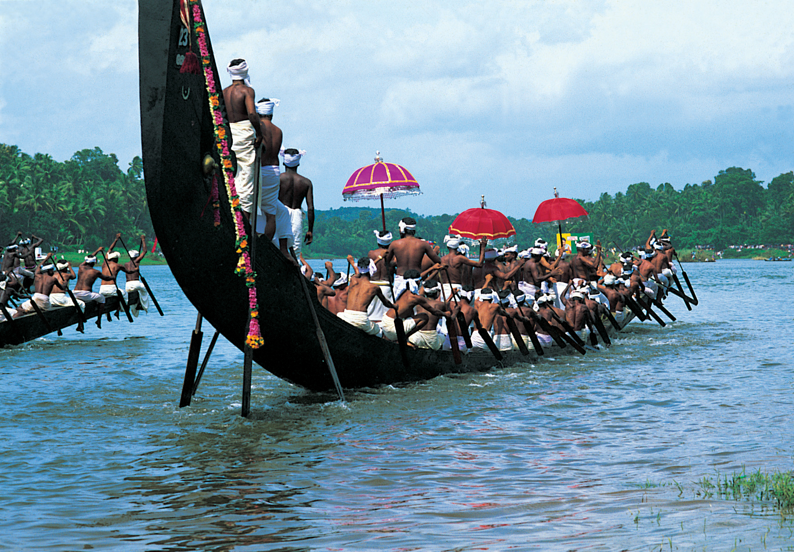
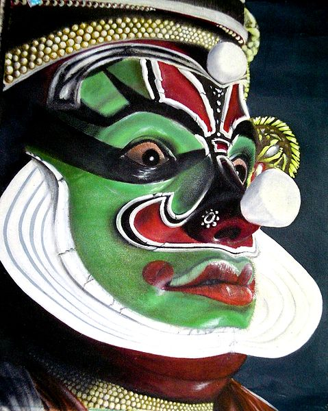
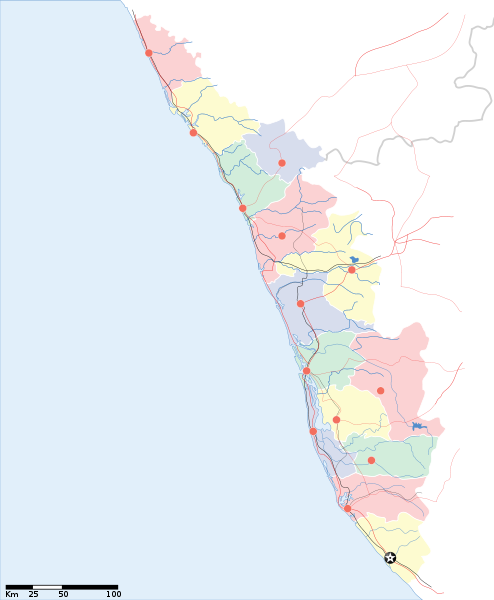

ALAPPUZHA :
Alappuzha is a Land Mark between the broad Arabian sea and a net work of rivers flowing into it.
In the early first decade of the 20th Century the then Viceroy of the Indian Empire, Lord Curzon made a visit in the State to Alleppey now Alappuzha.
Fascinated by the Scenic beauty of the place, in joy and amazement, he said, “Here nature has spent up on the land her richest bounties”.
In his exhilaration, it is said, he exclaimed, “Alleppey, the Venice of the East”.
Thus the sobriquet found its place in the world Tourism Map.
The presence of a port and a pier, criss -cross roads and numerous bridges across them, a long and unbroken sea coast might have motivated him to make this comparison
 

HOME
NEXT